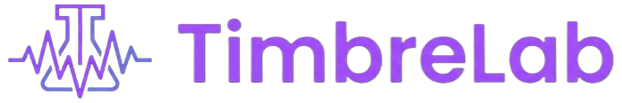
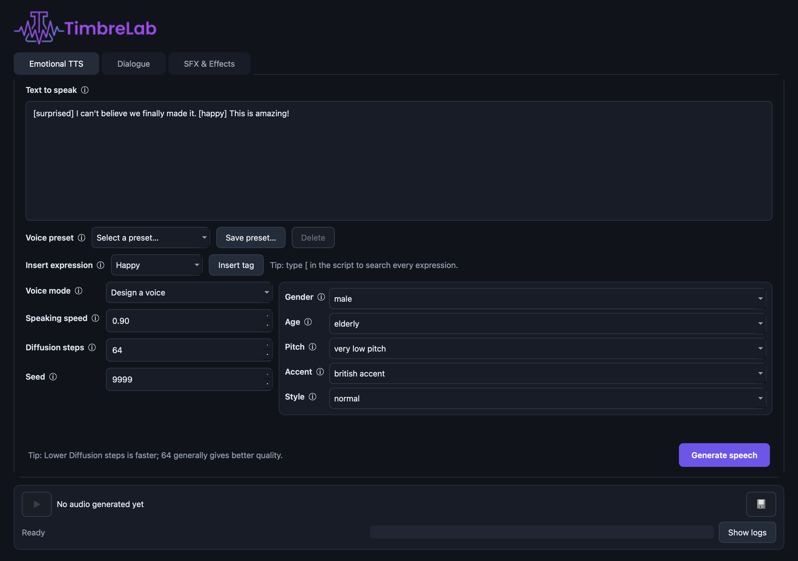

Shape voices, dialogue, and sound.
A local desktop studio for expressive speech, multi-speaker dialogue, and generated sound effects. Two AI audio engines, one interface, everything running on your own machine.
PyQt6 desktop appFully localApple Silicon & CUDAPython 3.10 / 3.11Built by TensorPeak
Emotional TTS, multi-speaker dialogue, and sound effects live in the same interface, over the same player and log panel.

Each engine gets its own Python environment because their PyTorch stacks differ. They run as persistent background processes, so the interface stays responsive and every model loads only once per session.
Multilingual text-to-speech with inline expressive cues and designed voices.
[happy] and [sigh]Prompt-based sound effects and environmental audio from a latent diffusion model.
Built around the parts of generative audio that are usually the most annoying: repeatability, iteration speed, and knowing what the model is actually doing.
Type [ in the editor to open tag autocomplete, filter as you type, and insert
the complete tag. No arbitrary emotion sliders — only cues the model actually supports.
Write one turn per line as Speaker: line. Every speaker maps to a saved voice
preset; the app renders each turn, inserts a pause, and combines the result into one preview.
Save voice mode, design attributes, speed, diffusion steps, and seed under a name. Eight editable starter presets ship on first launch.
Seeds from 0 to 2,147,483,647, defaulting to 9999. Same text, settings, seed, runtime, and hardware gives you the same take back.
Estimated progress, download-byte reporting, model-loading heartbeats, and diffusion-step percentages — plus a Stop button whenever a worker is active.
Generated WAVs are session-scoped until you explicitly save them. Anything you didn't keep is cleaned up when the app closes.
The launcher bootstraps itself. It finds a compatible Python, checks all three environments, installs only what is missing, and starts the app with the right interpreter.
chmod +x run.sh scripts/setup.sh
./run.shLater launches skip setup and start immediately.
./run.sh --setup-onlyPrepare or verify environments without opening the UI. Resume one with
./scripts/setup.sh omnivoice.
./run.sh --devHot reload: editing application Python files stops playback and workers, then relaunches the updated UI.
Run it directly, or through the console entry point:
.venv/bin/python -m audio_playground
.venv/bin/timbrelabSetup creates three local environments:
| Environment | Purpose |
|---|---|
| .venv | PyQt desktop application and tests |
| .venv-omnivoice | OmniVoice speech generation |
| .venv-sfx | AudioLDM sound-effect generation |
ffmpeg on your PATHCtrl+Enter / ⌘+Enter to generateOMNIVOICE_PYTHON and SFX_PYTHON
The cvssp/audioldm-s-full-v2 checkpoint is published under CC-BY-NC-SA 4.0.
Review that license before using generated assets in commercial work.
The automated suite covers expression normalization, safe output naming, dialogue parsing, voice-preset persistence and migration, deterministic seed wiring, device selection, download progress helpers, and hot-reload discovery. Full model generation stays a manual integration check — it needs multi-gigabyte downloads and suitable hardware.
.venv/bin/python -m pytest -q